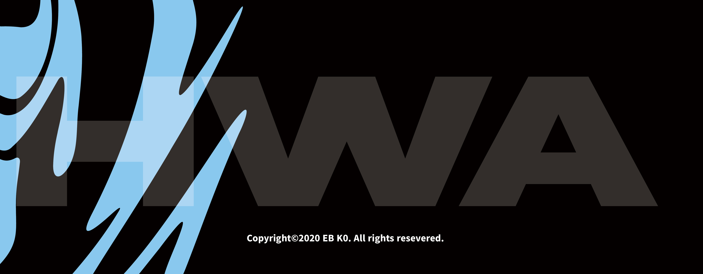
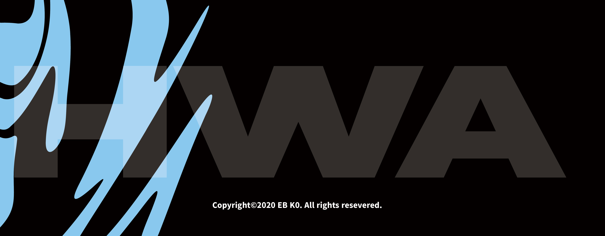

HWA
고은비
https://www.instagram.com/8080be/
“너넨 다 작고 귀엽더라.”
“나 동양인 여자 완전 좋아해.”
“나 동양 문화 진짜 좋아해. 완전 색다르고 특별하잖아.”
이런 말을 들으면 기분이 나쁜가? 언뜻 들으면 칭찬 같아 보이는 말들, 하지만 이는 모두 서양인의 고정관념이 뒤섞인 말이다. 해외, 특히 서양권 국가에서 동양 여성으로 존재한다는 것은 이런 고정관념과 끊임없이 마주치는 것이다. 온전한 하나의 주체적 존재가 아닌 ‘동양’ ‘여성’으로서 바라봐 지는 것.
서양인의 시각 안에서만 존재하는 동양 여성들. 그들은 귀엽고 얌전하며 신비롭다. 프로젝트 ‘HWA’ 는 서구 남성중심적 시선의 대상화를 비판하며 동양 여성들의 한과 분노를 표출한다. 모든 여성이 국가나 성별 등의 특정 프레임 속에서 바라봐 지는 것이 아닌 그저 한 명의 개인으로서 존재하고 살아가길 바란다.
"You're all small and cute."
"I love Oriental women."
"I love Eastern culture. It's completely different and special."
Do you feel sick when you hear these words? At first glance, it seems like a compliment, but all of these words are a mixture of Western stereotypes. Being an Asian woman overseas, especially in Western countries, means that you constantly encounter these stereotypes. Being viewed as "Eastern" or "Woman" rather than being a completely independent existence.
Oriental women exist only in Western vision. They are cute, quiet and mysterious. "HWA" criticizes Western men's focus and expresses the resentment and anger of Asian women. I hope that all women will live as individuals rather than being seen within a particular frame, such as the state or gender.